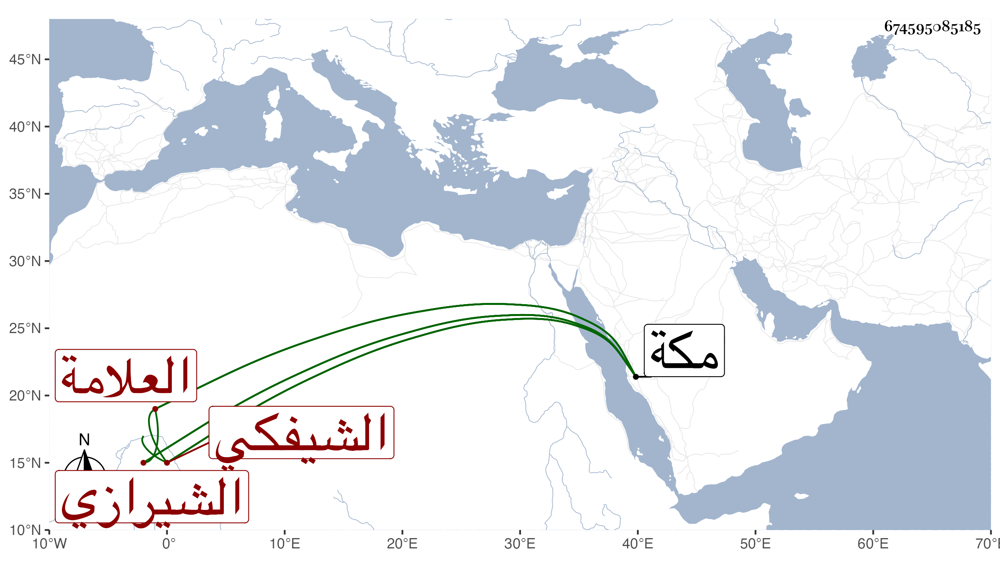

0902Sakhawi.DawLamic.ITO20230111-ara1.EIS1600.674595085185
Biography ID: 674595085185
أحمد بن عبد العزيز بن أحمد العلامة إمام الدين أو همام الدين الشيفكي ثم الشيرازي ، قال شيخنا في أنبائه قرأ على السيد الجرجاني المصباح في شرح المفتاح وقدم مكة فنزل في رباط رامست وأقرأ الطلبة وكان حسن التقرير قليل التكلف مع لطف العبارة وكثرة الورع ومعرفته بالسلوك على طريق كبار الصوفية وتحذيره من مقالة ابن العربي وتنفيره عنها واتفق أنه كان يقرئ في بيته بمكة فسقط بهم البيت إلى طبقة سفلى فلم يصب أحد منهم بشيء بل خرجوا يمشون فلما برزوا سقط السقف الذي كان فوقهم . مات بمكة في يوم الجمعة خامس عشري رمضان سنة تسع وثلاثين ، واقتصر ابن فهد على تاريخ وفاته ولكنه أفاد اسم جده نعم ترجمه في ذيله لتاريخ مكة .
